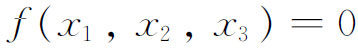
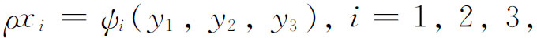
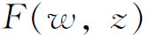
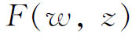
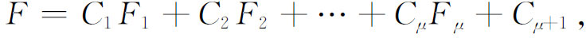
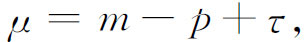
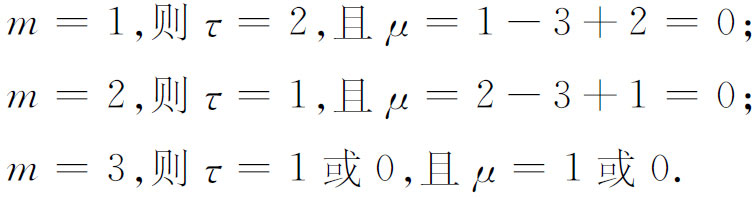
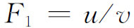

6．代数-几何方法
代数几何研究的一个新方向开始于1865年至1870年间克莱布什和戈丹的合作。克莱布什不满足于只指出黎曼的研究对曲线的重要意义。他现在想用曲线的代数理论来建立阿贝尔积分理论。在1865年他和戈丹合作写出了他们的《阿贝尔函数论》（Theorie der Abelschen Funktionen，1866）。我们必须注意到，这时魏尔斯特拉斯的更严密的阿贝尔积分理论尚无人知道，而黎曼的基础——他的存在性证明基于狄利克雷原理——不仅使人感到奇怪，而且还没有完善建立。而且那时对于代数型（或曲线）的不变量理论，以及对于用射影方法作为处理双有理变换的所谓第一步，都具有相当大的热情。
虽然克莱布什和戈丹的工作对代数几何做出了贡献，但并没有用纯代数理论来建立黎曼的阿贝尔积分理论。他们诚然是用代数的与几何的方法，而不同于黎曼的函数论方法，但他们也用了函数论的基本结果和魏尔斯特拉斯的函数论方法。另外他们也用了有理函数和交点定理的某些结果作为已给的事实。他们的贡献总的说来是：从一些函数论的结果出发，用代数方法获得了先前用函数论方法所建立的结果。有理变换是代数方法的精髓。
他们给出有理变换下代数曲线亏格p的不变性的第一个代数证明，以f＝0的次数和它的奇点个数作为p的定义。于是，利用p是

的线性无关的第一类积分的个数（而且这些积分处处有限）这一事实，他们证明变换
把第一类积分变到第一类积分，从而p是不变量。他们也给出阿贝尔定理的新证明（应用函数论的思想和方法）。
他们的工作是不严密的。特别是他们也按照普吕克的传统用任意常量的个数来确定Cm和Cn的交点个数。对特殊类型的二重点没有进行研究。克莱布什-戈丹工作对代数函数论的意义在于：用代数形式清楚表达出像阿贝尔定理那样的结果，并用这种形式来研究阿贝尔积分。他们把阿贝尔积分和阿贝尔函数理论中的代数部分放在更加突出的地位，特别是在变换本身的基础上建立了变换理论。
克莱布什和戈丹提出很多问题并留下很多漏洞。所提出的问题指出了以纯粹代数理论对代数函数进行代数研究的一个新方向。用代数方法的这个研究工作由布里尔与马克斯·诺特从1871年起继续进行，他们的关键性文章发表于1874年(44)。布里尔和马克斯·诺特的理论基于著名的留数定理，这在他们手里代替了阿贝尔定理。他们也用代数方法证明了关于代数函数

里常量个数的黎曼-罗赫定理，这里函数
除去在Cn的m个已给点外不再变为无穷大。根据这个定理，满足所说条件的最一般的代数函数具有形状
其中

τ是线性无关的函数φ（n－3次）的个数，它们在m个已给点处为零，p是Cn的亏格。例如，若Cn是没有二重点的C4，则p＝3，且φ都是直线。在这种情况下，若

当μ＝0时，没有代数函数在已给点处变为无穷大。当m＝3时，有一个且仅有一个这样的函数，假如那三个已知点是在一直线上的话。若三点确乎在一直线v＝0上，则此线交C4于第四个点。选取一直线u＝0通过这个点，则

。这个工作取代了黎曼对在已知点变为无穷的最一般的代数函数的确定法。再者布里尔-马克斯·诺特的成果胜过射影的观点，因其所处理的由f＝0给出的曲线Cn上点的几何，它们相互间的关系在一一对应双有理变换下不变。这样就第一次从代数上证明了曲线交点定理。计算常量个数这一方法被舍弃了。
代数几何方面的工作由马克斯·诺特(45)和阿尔方（Georges-Henri Halphen）(46)继续，他们详细研究了空间代数曲线。任一空间曲线C能够双有理地射影变换为一个平面曲线C1。由C所得的所有这种C1都有相同的亏格。所以C的亏格定义为任一这种C1的亏格，并且C的亏格在空间的双有理变换下是不变的。
多年来受到最大注意的课题是平面代数曲线的奇点的研究。直到1871年，代数函数的理论，从代数观点考虑的，限于研究有不同的或相离开的二重点（最坏的只是尖点）的那种曲线。对于有更复杂的奇点的曲线，人们相信可以作为具有二重点的曲线的极限情况来处理。但是实际的极限步骤是模糊的，并且缺乏严密性与统一性。奇点研究的顶峰是两个著名的变换定理。第一个定理说，每条不可约的平面代数曲线可用一个克里摩拿变换变到一条曲线，它除了有不同切线的重点外别无奇点。第二个定理断言，每条平面不可约代数曲线用只在曲线上双有理的变换，能变换成另一曲线，它只有具不同切线的二重点。曲线化简到这些简单形式，就使代数几何的一套方法容易得到应用。
然而，这些定理的许多证明，特别是第二个定理的证明，是不完整的或者至少受到数学家（除去给出证明的作者）的指责。第二个定理实际上有两种情况：射影平面中的实曲线以及复函数论意义下的曲线，其中x和y各自在一个复平面上取值。马克斯·诺特(47)在1871年用一系列在全平面上一对一的二次变换证明了第一定理。一般把这证明归功于他，实际上他只是指出一个证法，而是由许多著者加以完善并修改的(48)。克罗内克应用分析与代数，建立了一个方法以证明第二定理。他把这个方法在1858年口头上告诉了黎曼和魏尔斯特拉斯，从1870年起用之于讲课，并在1881年发表了它(49)。这个方法使用有理变换，借助于所给平面曲线的方程，变换是一对一的，并把奇异情况变到“正则情况”；即奇点变成有相异切线的二重点。然而这结果克罗内克并没有叙述出来，只是隐含在他的工作里。
这个第二定理的大意是，所有多重点用曲线的双有理变换能够化成二重点，它是由阿尔方在1884年(50)首先明显叙述出来并给予证明的，许多其他证明都曾提出过，但没有一个是被普遍接受的。